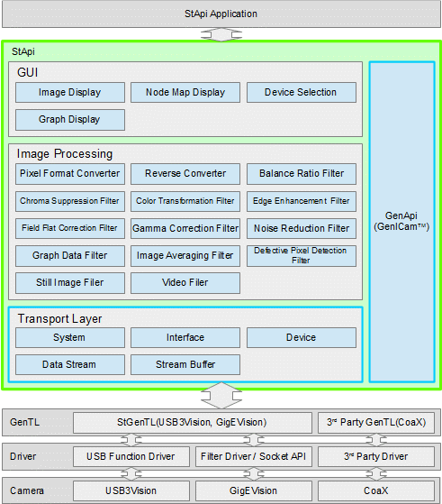

GenICam
カメラや取り込みボードごとにインターフェースが異なっている場合、使用するカメラや取り込みボードに応じて、アプリケーションの開発が必要となります。使用するカメラや取り込みボードに依存しない、汎用的なインターフェース[GenICam (Generic Interface for Cameras) http://www.GenICam.org]を実現するためにさまざまな規格が策定されています。
| 規格 | 内容 |
|---|---|
| SFNC (Standard Features Naming Convention) | 機能の名称や設定値の型などが規定されています。この規格により、使用するカメラのメーカーが異なっても、同じ機能は同じ名称で提供されるようになります。例えば露光時間は、 ExposureTime という名称が使用されており、us単位の実数で設定されます。 |
| PFNC (Pixel Format Naming Convention) | ピクセルフォーマットの名称や識別用の値について規定されています。 |
| GenApi (Application Programming interface) | 一般にGenICam対応と呼ばれるカメラでは、カメラ内部にXMLファイルというテキストファイルが保存されており、そのファイルに対応している機能の名称や実装されているアドレス等が明記されています。この規格ではXMLファイルの書式やその処理に使用されるAPIが規定さており、XMLファイルの処理に利用可能なAPIが無償で配布されています。カメラから取得したXMLファイルとこのAPIを使用することで、ユーザーはカメラ内部のアドレスを意識せずに、カメラの設定を行うことができます。 |
| GenCP (Control Protocol) | USB3VisionやCamera Link HSで採用されている通信プロトコルが規定されています。 |
| GenTL (Transport Layer) | カメラと通信を行うためのAPIが規定されています。この規格により、カメラや取り込みボードに依存しないコードでカメラと通信できるようになります。GigEVisionおよびUSB3Visionではこの規格への対応がオプション扱いとなっているため、一部のカメラメーカーのみ対応しています。CoaXPressではこの規格への対応が必須とされています。 |
| GenTL SFNC (GenTL Standard Features Naming Convention) | GenTL用のSFNCです。 |
| GigEVision, USB3Vision, CoaXPress, Camera Link HS | インターフェースごとに従うべき規約が規定されています。この規格により、画像処理ライブラリが様々なカメラメーカーのカメラにアクセスできるようになります。 |
これらの規格は下記の団体により規格化されており、WEBサイトから規格書等の入手が可能です。
| 規格団体 | URL | 規格 |
|---|---|---|
| EMVA (European Machine Vision Association) | http://www.emva.org/ | GenICam(SFNC, PFNC, GenApi, GenCP, GenTL, GenTL SFNC) |
| AIA (Automated Imaging Association) | http://www.visiononline.org/ | GigEVision, USB3Vision, Camera Link HS |
| JIIA (Japan Industrial Imaging Association) | http://www.jiia.org/ | CoaXPress |
これらの規格に従い、汎用的なAPI(GenApi, GenTL)および汎用的な名称(SFNC, PFNC)を使用することで、特定のカメラに依存しないアプリケーション開発が可能になります。

しかし、汎用的なAPIを直接使用してアプリケーションを開発する場合、GenTLやGenApiの詳細について理解が必要になります。また、カメラから出力されたベイヤー配列フォーマットなど特殊な画像データを、プレビュー可能なRGBフォーマットなどへ変換するために、別途、画像処理ライブラリが必要になる場合があります。
StApi
StApiはGenTLやGenApiを使用したカメラ用APIです。StApiはGenTLやGenApiを使用する際に必要となる複雑な処理を内部に隠ぺいしているため、GenTLやGenApiを詳細まで理解していなくても使用することができます。また、ピクセルフォーマット変換などの画像処理機能やGUI機能も提供されているため、別途画像処理ライブラリを用意しなくても、カラー画像のプレビューやファイルへの保存が可能です。 StApiはUSB3Vision, GigEVisionに対応したSDK付属のGenTLに加え、CoaXPressに対応したEuresys社製、SiliconSoftware社製、Kaya社製およびActiveSilicon社製（※）のGenTLに対応しており、これによりUSB3Vision, GigEVision, CoaXPressカメラに対応したアプリケーションを構築できます。
- 注意
- ※ Kaya社製およびActiveSilicon社製のGenTLは、Windows版のみ対応しています。
StApiは以下のように構成されています。ユーザーは緑色の枠内のモジュールを使用します。GenTLはTransport Layerの5つのインターフェイス(System, Interface, Device, Data Stream, Stream Buffer)により間接的に使用されます。Transport LayerとGenApiを使用することでカメラの設定および画像データ,イベント等の取得が可能になります。
